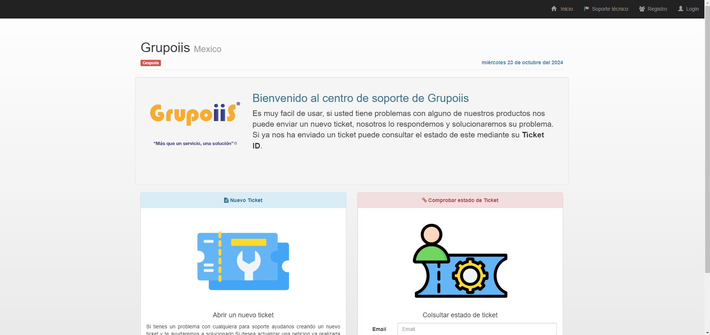
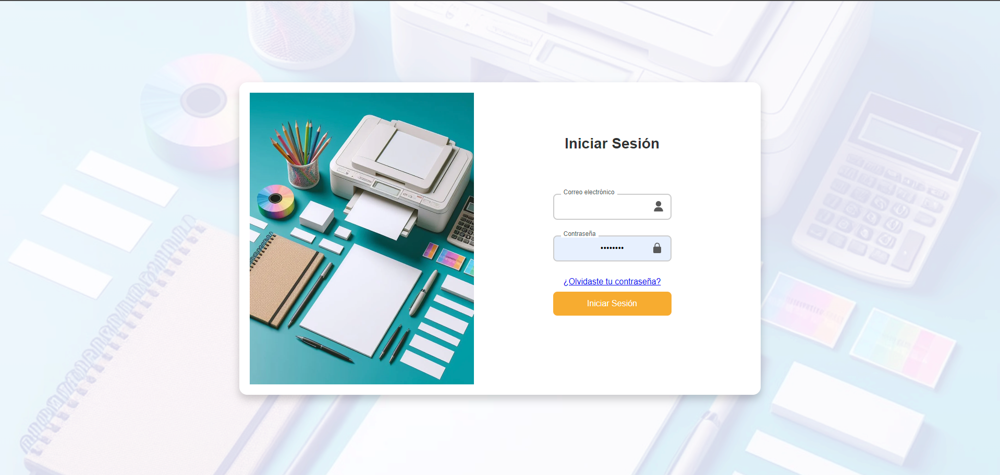

PORTAFOLIO




Hola, mi nombre es Edwin Eduardo. Soy un joven universitario, con muchas ganas de emprendimiento y de aprender cosas nuevas. .
Tengo una carrera trunca de ingeniero industrial, en la cual me enseñaron el manejo de proyectos asi como, ser un lider en el manejo de proyectos
Termine la carrera de tecnico superior en tecnologias de la informacion, en la cual puli mis Habilidades y conocimientos en programacion y manejo de redes
Actualmente estoy estudiando mi ingenieria en la cual, he pulido mis Habilidades en programacion, manejo de redes y manejo de proyectos
lleve acabo manejo de bases de datos de excel, asi comosolicitudes de trabajo, mayormente me dedique al manejo de archivo y trabajo de oficina
Inicie el manejo de compra de servicios y busqueda de provedores de marketing, manejo de venta y de como se hacen las cotizaciones con diferentes provedores de materia prima.
Desarrolle un sistema de servicio, en el cual se usaba para el manejo de altas y bajas de servicio, asi como instalacion de red y de cableado para conecxiones de equipos de computo.